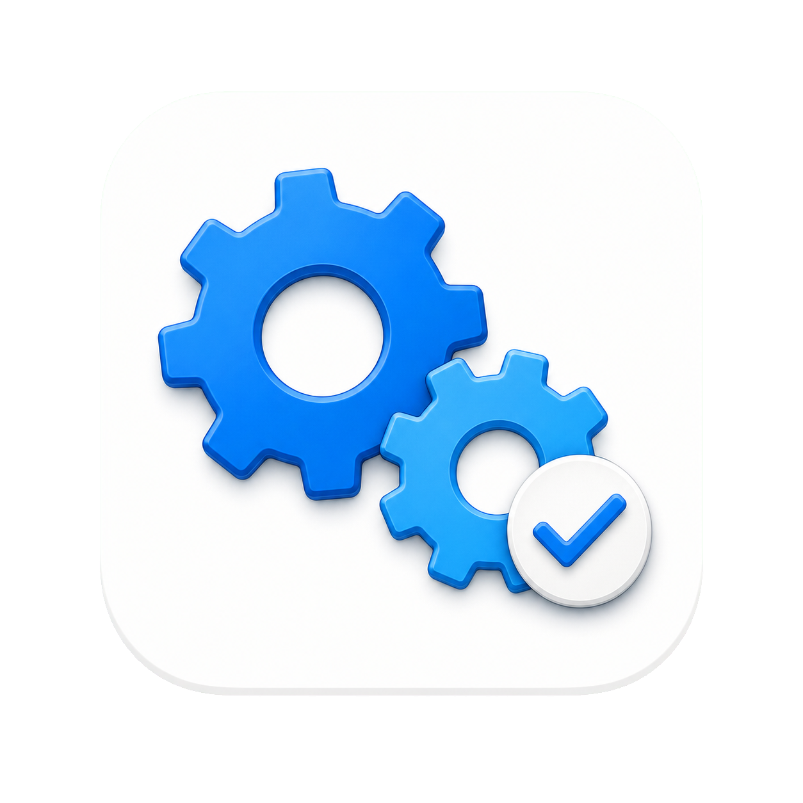
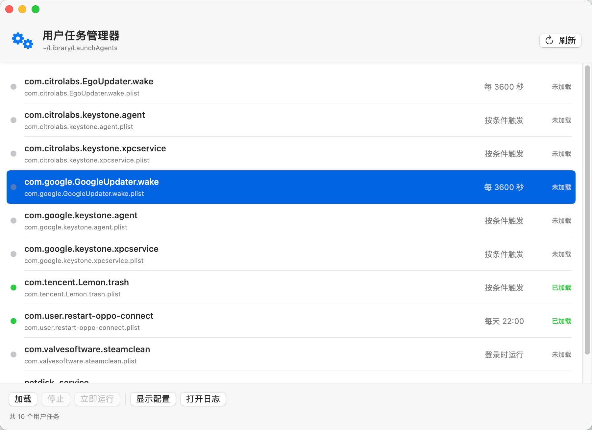
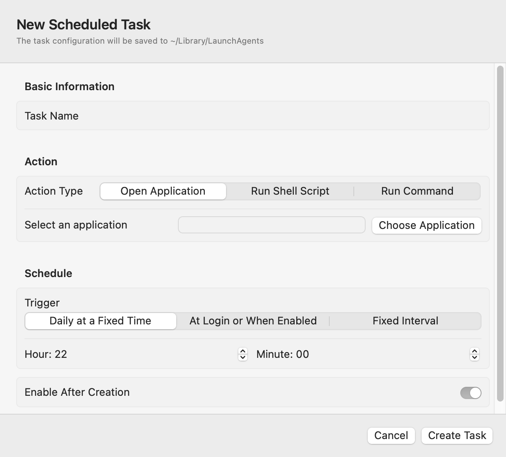

Create schedules visually
Open an app, run a Shell script, or execute a command daily, at login, or on a fixed interval.

LaunchAgent StudioCreate and manage launchd tasks without hand-editing plist files. A friendly, macOS-native alternative to crontab for everyday user-level automation.

launchd is powerful, but its configuration files are not designed for quick, everyday use. LaunchAgent Studio adds a clear interface without hiding what macOS is doing.
Open an app, run a Shell script, or execute a command daily, at login, or on a fixed interval.
Enable, disable, run immediately, inspect configuration, open logs, and remove user tasks from one place.
Friendly names and readable schedules make background services easier to identify than raw plist labels.
Choose what should run, decide when it should run, and optionally enable it immediately. The configuration is saved as a standard LaunchAgent in your user Library.

Get the universal ZIP from the latest GitHub Release and extract it.
Drag LaunchAgent Studio into your Applications folder.
Control-click the app and choose Open on the first launch, then create or manage your tasks.
For many user-level scheduled jobs, yes. LaunchAgent Studio uses macOS launchd rather than cron, so the scheduling model is different, but daily, login, and fixed-interval automation is covered.
No. The app works locally on your Mac. This product page and its downloads are hosted by GitHub.
No. It is intentionally limited to user LaunchAgents and does not manage system LaunchDaemons or request administrator access.
Yes. LaunchAgent Studio provides a focused interface for common user-level LaunchAgent tasks. It is not affiliated with LaunchControl or other launchd management products.
Download LaunchAgent Studio and replace plist editing with a focused native interface.